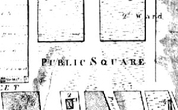
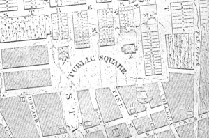

|
The Public Square The Public Square was a landmark place of unknown origin in early Albany! This open space was located above the settled part of the colonial city and appeared on the community landscape during the 1780s or 90s as settlement spread west from the State Street/Market Street core. Previously, it had appeared on colonial cartography as a vacant area below and east of the fort. With the removal of the stockade and the dismantling of the fort following the Seven Years War, the area above the colonial city began to be developed. The Square was first named on the development version of the De Witt map dated 1794. The Square's hillside location and fact that the King's Highway (also called Lion Street and later Washington Avenue) ran through it probably precluded its long term development. However, for some of the time between the 1780s and the 1820s, it was bounded on the south by Deer Street and the municipal cemetery, on the north by Elk Street, by Eagle Street on the east, and by the hill on the west. The "first" new jail sat on the hillside and was bounded by Eagle and State Streets, and by upper Maiden Lane. By the end of the War of 1812, the Public Square had become a more formal, mediating space anchored by the Capitol building and the new Albany Academy on the western edge of its south and north corners. The map dated 1818 shows the square as a prominent feature of the booming American city By that time, the municipal cemetery located south of the Capitol had been abandoned and the graves removed to the Washington Park burial grounds. The shaded area east of Eagle Street represents the settled area of the city. The lots along Elk Street had been laid out for develpment. However, by the 1840s, Washington Avenue had been more formally laid-out and the square had been replaced by gardens/lawns.
Sources: The basic resources for comprehending this landmark are cartographic. Detail from a large city map made by Evert Van Allen and dated 1818. Copy in the Graphics Archive of the CAP. Original may be in the map collection of the New York State Office of General Services. Home | Site Index | Navigation | Email | New York State Museum posted: 7/20/03 |